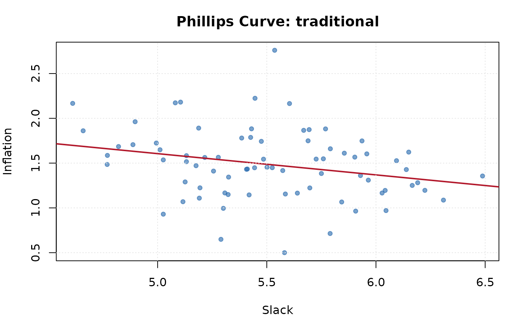

Fits a Phillips curve relating inflation to an economic slack measure (output gap or unemployment rate). Supports traditional, expectations- augmented, and hybrid specifications.
Usage
ik_phillips(
inflation,
slack,
expectations = NULL,
type = c("traditional", "expectations_augmented", "hybrid"),
lags = 4L,
robust_se = FALSE
)Arguments
- inflation
Numeric vector. Inflation rate series.
- slack
Numeric vector. Slack measure (output gap or unemployment rate), same length as
inflation.- expectations
Numeric vector or
NULL. Inflation expectations series, required for"expectations_augmented"and"hybrid"types. Must be the same length asinflation.- type
Character. Phillips curve specification:
"traditional","expectations_augmented", or"hybrid".- lags
Integer. Number of lagged inflation terms to include. Default
4.- robust_se
Logical or character. If
FALSE, use OLS standard errors. IfTRUEor"HC1", compute HC1 heteroskedasticity-robust standard errors. If"HAC", compute Newey-West heteroskedasticity and autocorrelation consistent standard errors with automatic bandwidth selection (Newey and West, 1994). DefaultFALSE.
Value
An S3 object of class "ik_phillips" with elements:
- coefficients
Named numeric vector of estimated coefficients.
- std_errors
Named numeric vector of standard errors.
- p_values
Named numeric vector of p-values.
- r_squared
Numeric. R-squared of the regression.
- type
Character. The Phillips curve type.
- slope_estimate
Numeric. The estimated slope on the slack variable.
- n_obs
Integer. Number of observations used.
- residuals
Numeric vector. Regression residuals.
Examples
data <- ik_sample_data("headline")
pc <- ik_phillips(data$inflation, data$unemployment, type = "traditional")
print(pc)
#>
#> ── Phillips Curve Estimation ───────────────────────────────────────────────────
#> • Type: Traditional
#> • Slope estimate: -0.1475 (p = 0.0801) *
#> • R-squared: 0.4342
#> • Observations: 76
plot(pc)
